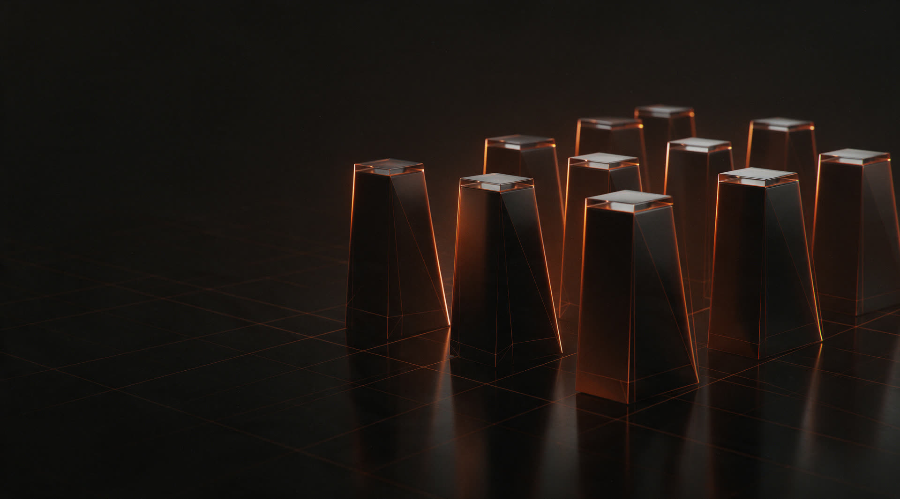
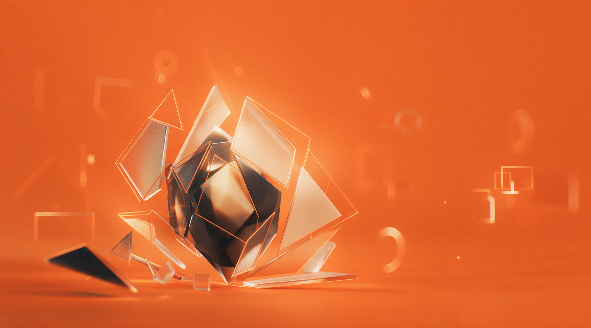
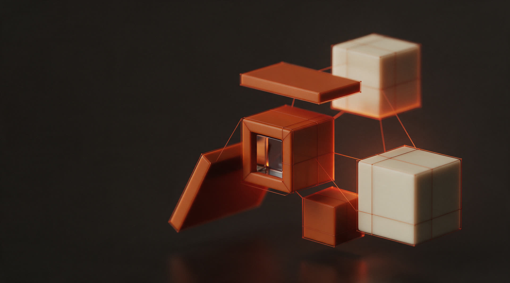

01
Taskuinha do Pirata
Taberna de petiscos. Menu e ecrãs em loop. 2026.
Somos um estúdio. Desenhamos o teu site à medida e mostramos-to inteiro antes de escrever uma linha de código.
O que costuma acontecer
Metade dos sites da tua rua saiu do mesmo template.
Trocam-se as fotos, muda-se a cor, e fica um site que podia ser de qualquer pessoa. Quem chega não se lembra dele, e um negócio que não se distingue acaba a competir só pelo preço.

Começamos por perceber o negócio e quem te compra. Depois desenhamos cada ecrã à medida disso, mostramos-te tudo, e só quando disseres que está é que se escreve código.

Taberna de petiscos. Menu e ecrãs em loop. 2026.

Stand automóvel. Catálogo e painel de gestão. 2026.

Restaurante. Site e reservas. 2025.

Serviços ao domicílio. Site e pedidos. 2025.

Marca e presença digital. 2025.
Abre o que te interessa.
Desenhamos cada ecrã à medida da tua marca e mostramos-te tudo antes de escrever uma linha de código. O cliente encontra o que procura sem ter de pensar.
Construímos o site com tecnologia que o faz abrir num instante, em qualquer telemóvel. Um site lento perde o cliente antes de lhe mostrar o que vendes.
Levamos a tua ementa para onde os clientes olham: no telemóvel por QR code e num ecrã dentro do espaço, em loop. Mudas o preço num sítio e muda em todo o lado.
Um painel só teu, feito à medida do que precisas de mudar no dia a dia. Publicas, editas e deixas coisas agendadas, sem código.
Tratamos da cara da tua marca, do logótipo às cores e às regras de uso. Ficas com uma imagem que se reconhece à distância, no site, na montra ou na farda.
Pequenos movimentos que dão vida ao site sem nunca atrapalhar quem o está a usar. Guiam o olho para onde interessa e fazem o site parecer bem feito, porque é.

Mesmo que ainda seja só uma ideia. Respondemos depressa e dizemos-te logo se é trabalho para nós.
support@devplus.pt